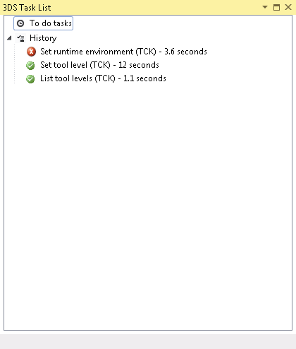
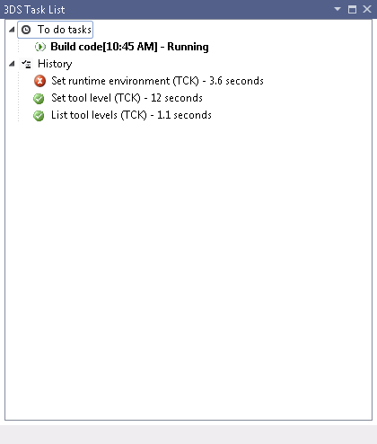
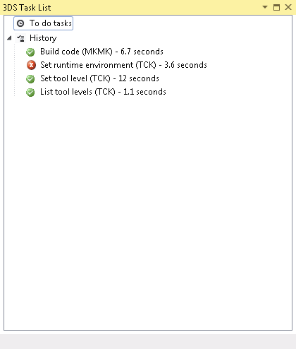
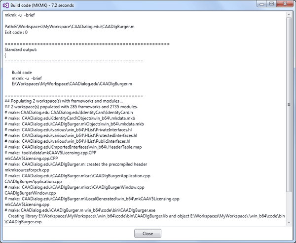

3DS Tasks List |
|
The 3DS Tasks view shows the task currently being executed, the tasks waiting for execution, and the last 20 tasks completed. |
| Before you begin:
Open the appropriate workspace. |
On the View menu, point to 3DS Views, and click 3DS Tasks List.
The 3DS Tasks List view opens.

This view shows:
When you run a task, the To do tasks sections display the running task, such as the Build code task below.

You can cancel this running task:
Right click the task.
Click Cancel.
When the task is completed, it is displayed in the History section.

You can access the trace log for each completed task. You can also restart any of them.
In the 3DS Tasks List view, right-click a task.
In the contextual menu, click Show trace.
A pop-up window opens, displaying the trace log.

Click Close to close the pop-up window.
In the 3DS Tasks List view, right-click a task.
In the contextual menu, click Restart.
The task restarts.
In the 3DS Tasks List view, right-click a task.
In the contextual menu, click Parse result.
The task output is displayed in the Output window. If the task failed, the Error List window is also available..
This is useful to retrieve the output and possibly the error log of a previous task since this data is refreshed in the Output and possibly the Error List window whenever a new task is run.
| Version: 1 [Jul 2017] | Update for V5-6R2018 and Visual Studio 2015 |
| Version: 1 [Jul 2014] | Document created |